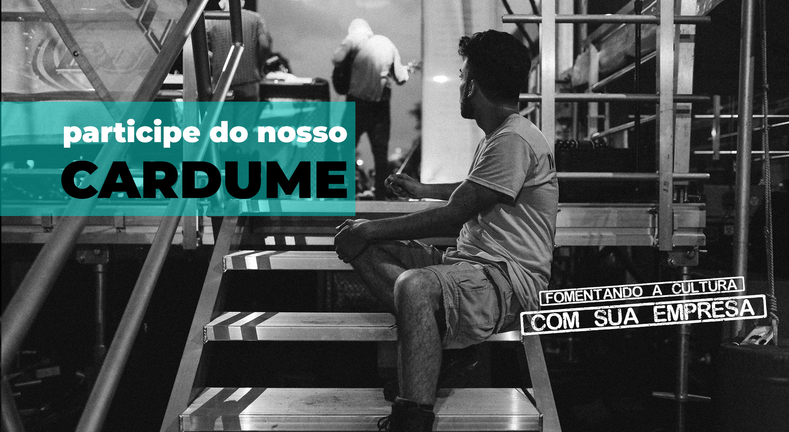

O Cardume é uma plataforma digital com objetivo de interagir empresas engajadas socialmente e sociedade como um todo, em especial pessoas interessadas em ações sustentáveis. No Cardume você poderá:

As ODS são 17 metas globais criadas pela ONU com intuito de desenvolver projetos e soluções para um mundo sustentável. Assim, ao desenvolver tais metas e soluções construímos um país mais forte economicamente, mais justo socialmente e responsável ambientalmente.